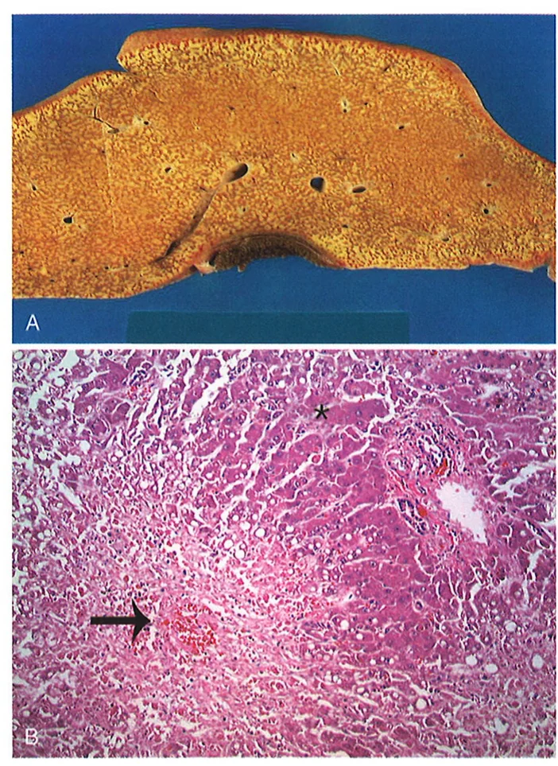
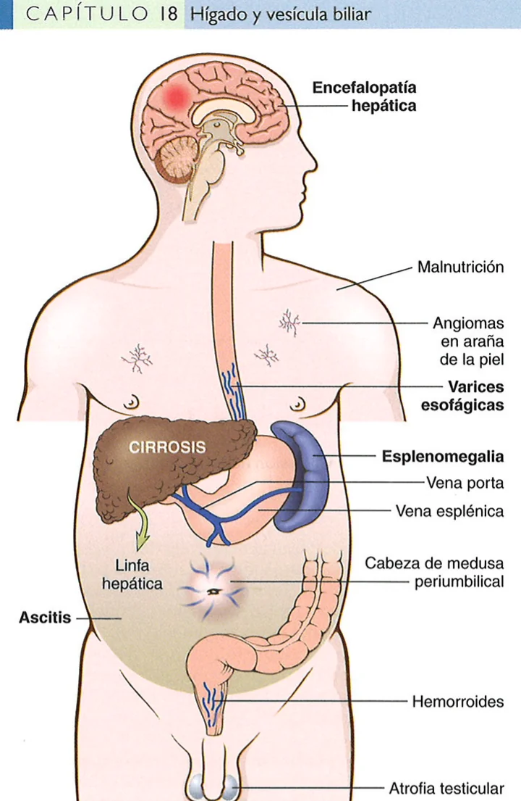
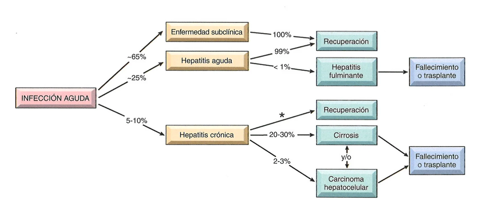
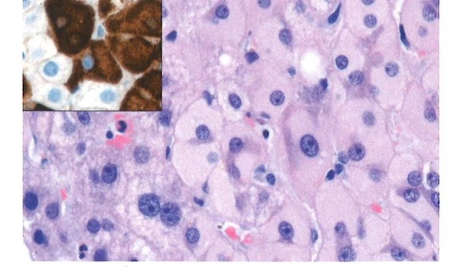
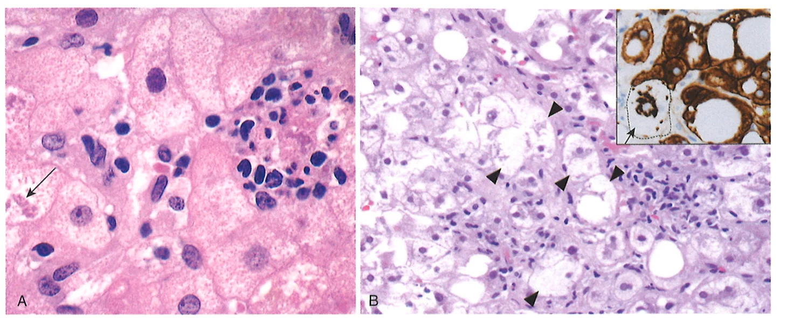
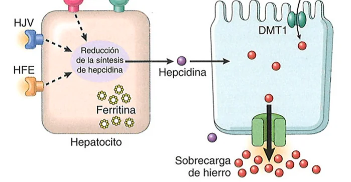
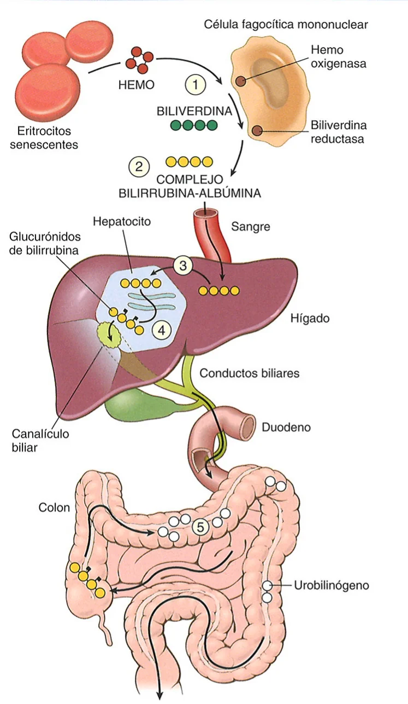
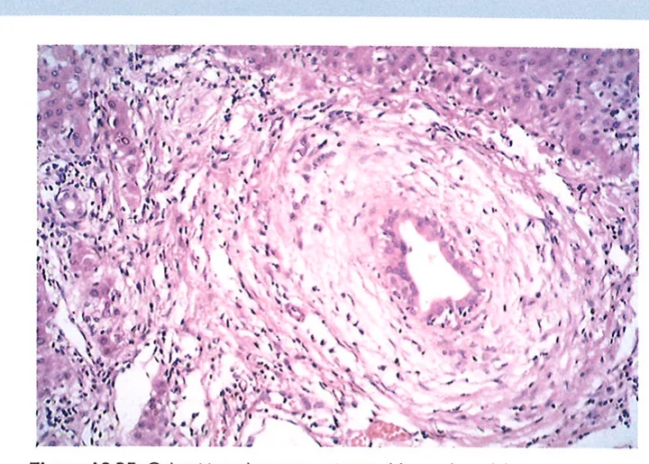

Qué cubre esta guía
Las citas p. N corresponden a la página impresa del libro. El texto se publica sin agregar contenido que no esté en el capítulo.
Lo esencial en 60 segundos
- Zona 3 (pericentral): isquemia, paracetamol/NAPQI por CYP450 y congestión; zona 1 (periportal): hierro e inclusiones PAS+ de α1-AT p. 824, 842.
- Insuficiencia hepática exige perder 80-90% de la función; descenso de transaminasas con empeoramiento clínico = pocos hepatocitos vivos, no mejoría p. 826-827.
- VHC cronifica 80-90% y los antivirales de acción directa (NS3/4A, NS5A, NS5B) curan >99% de quienes logran respuesta viral sostenida p. 834-835.
- Hemocromatosis (HFE C282Y), Wilson (ATP7B) y α1-AT (PiZZ) son hepatopatías hereditarias; hierro y cobre dañan sin inflamación característica p. 848-851.
- CHC surge en cirrosis en la mayoría; mutaciones CTNNB1 40%, promotor TERT 50-60%, TP53 hasta 60% p. 868-869.
- Cálculos de colesterol (90% en EE. UU.) vs pigmentarios (negros por hemólisis, marrones por infección); carcinoma vesicular: cálculos en 95% de los casos p. 873-877.
Ideas clave
- El hígado normal del adulto pesa 1.400-1.600 g; recibe 60-70% del flujo por la vena porta y 30-40% por la arteria hepática. La doble irrigación explica la rareza del infarto hepático p. 823.
- En el modelo acinar, la zona 1 (periportal) está mejor oxigenada y la zona 3 (pericentral) es la más vulnerable a la isquemia, la toxicidad por CYP450 (paracetamol) y la congestión p. 824.
- El hepatocito balonizado (tumefacción, aclaramiento citoplásmico, hialina de Mallory) es el sello de la esteatohepatitis alcohólica y no alcohólica, pero aparece también en lesión isquémica, tóxica y colestásica; no es específico, pero es esencial para diagnosticar esteatohepatitis p. 824-825.
- La muerte hepatocitaria es por necrosis (isquemia, estrés oxidativo) o apoptosis (cuerpos acidófilos; el epónimo "cuerpos de Councilman" se reserva por convención a la fiebre amarilla) p. 825.
- La fibrosis depende de la activación de las células estrelladas hepáticas a miofibroblastos (TNF, TGF-β, IL-17, ERO), con capilarización sinusoidal y pérdida de fenestraciones; si cesa la lesión, la cicatriz puede regresar (cirrosis septal incompleta), aunque las anomalías vasculares (hipertensión portal) pueden persistir p. 825-826.
- En la insuficiencia hepática debe perderse el 80-90% de la capacidad funcional; sin trasplante la mortalidad es ~80%. La insuficiencia aguda se define con encefalopatía y coagulopatía dentro de 26 semanas sin hepatopatía previa; el paracetamol causa ~50% de los casos en EE. UU. p. 826.
- La disminución de las transaminasas en la insuficiencia aguda no es mejoría: indica pocos hepatocitos viables p. 827.
- Cirrosis ≠ insuficiencia hepática crónica: no toda cirrosis descompensa y no toda hepatopatía terminal es cirrótica (CBP, CEP, hiperplasia nodular regenerativa, esquistosomiasis). ~40% de los ciróticos permanecen asintomáticos p. 828.
- Las cuatro consecuencias de la hipertensión portal son encefalopatía, ascitis, derivaciones portosistémicas (varices) y esplenomegalia congestiva; la ascitis es causada por cirrosis en el 85% de los casos p. 829-830.
- VHC: 80-90% de los infectados cronifican y ~20% de estos progresa a cirrosis en 20-30 años; los antivirales de acción directa (anti-NS3/4A, NS5A, NS5B) logran curación en >99% de quienes alcanzan respuesta viral sostenida p. 834-835.
- Hemocromatosis hereditaria (mutación HFE C282Y), enfermedad de Wilson (ATP7B) y deficiencia de α1-antitripsina (PiZZ) son las hepatopatías hereditarias principales; el hierro y el cobre son hepatotoxinas directas sin inflamación característica p. 848-851.
- El carcinoma hepatocelular surge en cirrosis en la mayoría de los casos (15-20% en hígado no cirrótico); mutaciones frecuentes: CTNNB1 (β-catenina, 40%), promotor de TERT (50-60%), TP53 (hasta 60%) p. 868-869.
Introducción: anatomía y respuestas a la lesión hepática
El hígado se organiza en lobulillos hexagonales (1-2 mm) alrededor de venas hepáticas terminales; cada uno se subdivide en seis ácinos. Los hepatocitos pericentrales son zona 3 y los periportales zona 1. Los sinusoides tienen endotelio fenestrado; debajo está el espacio de Disse con microvellosidades hepatocitarias y células estrelladas (almacenan vitamina A). Las células de Kupffer se unen a la cara luminal del endotelio. Los canalículos biliares (1-2 μm) drenan a los canales de Hering, luego a conductillos y conductos interlobulillares. Los linfocitos (principalmente T y NK) llegan al 22% de las células no hepatocitarias p. 823-824.
Evaluación analítica
- Integridad hepatocitaria: GOT (AST), GPT (ALT), LDH.
- Función excretora: bilirrubina total y directa, bilirrubinuria, ácidos biliares séricos.
- Lesión canalicular: fosfatasa alcalina y GGT séricas.
- Función sintética: albúmina, factores de coagulación (TP/TTP, fibrinógeno, protrombina, factores V, VII, IX, X).
- Metabolismo: amoniaco sérico.
Fuente: p. 824 (tabla 18.1).
Mecanismos de lesión y reparación
- Balonización: tumefacción, aclaramiento citoplásmico, agrupamiento de filamentos intermedios (hialina de Mallory) p. 824.
- Necrosis: hinchamiento y ruptura de la membrana, calcio intracelular, disfunción mitocondrial; predomina en isquemia/hipoxia y estrés oxidativo p. 825.
- Apoptosis: retracción, picnosis, cariorrexis, cuerpos acidófilos (Councilman solo en fiebre amarilla) p. 825.
- Necrosis confluente: pérdida zonal (zona 3), necrosis en puentes (central-portal o portal-portal) y necrosis panacinar (todo el lobulillo borrado) p. 825.
- La reparación depende de la replicación de hepatocitos maduros (se comportan como células madre); en enfermedad crónica con senescencia replicativa aparecen reacciones ductulillares con células multipotenciales p. 825.
- Células estrelladas: quiescentes almacenan lípidos y vitamina A; se activan a miofibroblastos por TNF, alteraciones de la MEC y ERO, con señales de PDGFR-β, TGF-β e IL-17. El colágeno se deposita en el espacio de Disse con capilarización sinusoidal (prominente en esteatohepatitis no alcohólica y CHC) p. 825-826.
- Con la retirada de la lesión (eliminar virus, dejar el alcohol), las metaloproteinasas degradan los tabiques → cirrosis septal incompleta; la remodelación vascular no siempre se normaliza, lo que explica la hipertensión portal persistente p. 826.
Insuficiencia hepática
Insuficiencia hepática aguda
Hepatopatía aguda con encefalopatía y coagulopatía en ≤26 semanas sin hepatopatía previa; habitualmente aparece en las primeras 8 semanas y muchos pacientes comatizan en 1 semana p. 826.
- Etiología: paracetamol ~50% de los casos en EE. UU. (aparición muy rápida, necrosis masiva); hepatitis autoinmunitaria, otros fármacos/toxinas, VHA y VHB agudos. En Asia predominan VHB y VHE. Causas infrecuentes: anomalías del flujo sanguíneo, trastornos metabólicos y neoplasias (leucemia/linfoma 33%, mama 30%, colon 7%). Etiología indeterminada: ~15% adultos, ~50% niños p. 826.
- Mnemotecnia de causas: A (paracetamol, hepatitis A, hepatitis autoinmunitaria), B (hepatitis B), C (hepatitis C, criptógena), D (fármacos/toxinas, hepatitis D), E (hepatitis E, enfermedad de Wilson, Budd-Chiari, linfoma, carcinoma), F (cambio graso microvesicular: hígado graso del embarazo, valproato, tetraciclinas, síndrome de Reye) p. 831.
- Morfología: necrosis hepática masiva con islotes de hepatocitos conservados; hígado pequeño y retraído. El paracetamol produce necrosis confluente zonal (zona 3) en horas-días, sin cicatriz ni regeneración; las hepatitis víricas evolucionan en semanas-meses, con regeneración y cicatrización visibles p. 826-827.
- La esteatosis microvesicular difusa (hígado graso del embarazo, valproato, tetraciclina) causa insuficiencia por disfunción mitocondrial sin muerte celular evidente p. 826.
- Virus no hepatótropos (CMV, VHS, adenovirus) causan insuficiencia aguda en inmunodeficiencia (VIH no tratado, postrasplante, neoplasias linfoideas) p. 826.


Características clínicas de la insuficiencia hepática
- Náuseas, vómitos, ictericia, luego encefalopatía y coagulopatía. El descenso de transaminasas con empeoramiento de ictericia/coagulopatía indica hepatocitos residuales escasos p. 827.
- Encefalopatía hepática: espectro desde alteraciones sutiles al coma; asterixis característica; se atribuye al amoniaco (de origen intestinal, metabolizado en el ciclo de la urea hepático) que actúa sobre neuronas y aumenta la glutamina astrocitaria (osmolito → edema cerebral) p. 827.
- Coagulopatía: déficit de factores II, V, VII, IX, X, XI, XII y fibrinógeno; puede agregarse CID por pérdida del aclaramiento hepático de factores activados p. 827.
- Síndrome hepatorrenal: insuficiencia renal sin causa renal intrínseca; se inicia con vasodilatación esplácnica mediada por NO → activación del eje renina-angiotensina → menor perfusión y filtrado glomerular. Reversible con trasplante hepático p. 827.
Insuficiencia hepática crónica y cirrosis
- Principales causas mundiales: hepatitis B crónica, hepatitis C crónica, hígado graso no alcohólico y hepatopatía alcohólica p. 828.
- Morfología: nódulos parenquimatosos rodeados de bandas fibrosas densas; superficie irregular con cicatrices deprimidas. En la regresión hay cicatrices delgadas e incompletas p. 828-829.
- Clínica: ~40% asintomático; causas de muerte: encefalopatía, hemorragia por varices esofágicas, infecciones bacterianas y CHC. La colestasis persistente causa prurito; la hiperestrogenemia produce eritema palmar, angiomas en araña, hipogonadismo y ginecomastia p. 828.
Hipertensión portal
| Nivel | Causas |
|---|---|
| Prehepáticas | Trombosis obstructiva de la vena porta; estenosis de la vena porta antes de ramificarse |
| Intrahepáticas | Cirrosis (causa predominante); hiperplasia nodular regenerativa; CBP (sin cirrosis); esquistosomiasis; cambio graso masivo; enfermedad granulomatosa fibrosante (sarcoidosis); tumores; amiloidosis |
| Posthepáticas | Insuficiencia cardiaca derecha; pericarditis constrictiva; obstrucción del flujo de salida venoso hepático |
Fuente: p. 828-829 (tabla 18.2).
- Patogenia: resistencia sinusoidal (contracción de células del músculo liso y miofibroblastos, cicatrices, nódulos) más circulación hiperdinámica (vasodilatación esplácnica mediada por NO). Disminuye el NO sinusoidal y aumenta endotelina-1, angiotensinógeno y eicosanoides p. 829.
- Ascitis: en el 85% causada por cirrosis; detectable con ≥500 ml; proteínas <3 g/dl y gradiente albúmina suero-ascitis ≥1,1 g/dl. Neutrófilos sugieren infección; eritrocitos, tumor diseminado. El hidrotórax es derecho p. 829.
- Derivaciones portosistémicas: hemorroides, varices esofagogástricas, retroperitoneo y colaterales periumbilicales (cabeza de medusa). Las varices aparecen en ~40% de los ciróticos avanzados y causan hematemesis masiva y muerte en ~la mitad; cada episodio de hemorragia tiene ~30% de mortalidad p. 830.
- Esplenomegalia congestiva: hasta 1.000 g (5-6 veces lo normal); hiperesplenismo con trombocitopenia y pancitopenia por secuestro p. 830.
- Síndrome hepatopulmonar: hasta 30% de los ciróticos; dilatación de vasos capilares/precapilares intrapulmonares hasta 500 μm, derivación derecha-izquierda, hipoxemia con disnea peor en posición erguida p. 830.
- Hipertensión portopulmonar: hipertensión arterial pulmonar asociada a hepatopatía, con disnea de esfuerzo y dedos en palillo de tambor p. 830.


Insuficiencia hepática aguda sobre crónica
- Cirrosis establecida con derivación vascular extensa: parénquima con aporte vascular límite muy vulnerable. Mortalidad a corto plazo ~50% p. 830.
- Desencadenantes: sobreinfección por VHD en portador de VHB, mutantes resistentes de VHB, colangitis ascendente (CEP, enfermedad fibropoliquística), pérdida rápida de peso en esteatohepatitis no alcohólica, septicemia e hipotensión, insuficiencia cardiaca aguda, fármacos, y CHC/colangiocarcinoma o metástasis (p. ej., colon) p. 830-831.
Trastornos infecciosos
Hepatitis vírica
Virus hepatótropos: VHA, VHB, VHC, VHD, VHE. No hepatótropos (VEB, CMV, VHS, adenovirus, fiebre amarilla) causan hepatitis sistémicas p. 831.
| Virus | Tipo | Vía | Incubación | Cronificación | Diagnóstico |
|---|---|---|---|---|---|
| VHA | ARN monocatenario | Fecal-oral | 2-6 sem | Nunca | IgM anti-VHA |
| VHB | ADN parcialmente bicatenario | Parenteral, sexual, perinatal | 2-26 sem (media 8) | 5-10% | HBsAg o anti-HBc; PCR ADN-VHB |
| VHC | ARN monocatenario | Parenteral | 4-26 sem (media 9) | 80-90% | Anti-VHC; PCR ARN-VHC |
| VHD | ARN circular defectuoso | Parenteral | Igual que VHB | 10% coinfección; 90-100% superinfección | Anti-VHD; PCR ARN-VHD |
| VHE | ARN monocatenario | Fecal-oral | 4-5 sem | Solo inmunodeprimidos | IgM/IgG; PCR ARN-VHE |
Fuente: p. 836 (tabla 18.3).
Virus de la hepatitis A
- Picornavirus ARN+ sin cubierta, 27 nm, género Hepatovirus; receptor HAVcr-1 (TIM-1). No es citopático: la lesión es por linfocitos T CD8+ citotóxicos y NK p. 831.
- Fecal-oral; se elimina en heces 2-3 semanas antes y 1 semana después de la ictericia. No transmisión materno-fetal; viremia transitoria p. 831.
- Incubación 2-6 semanas; IgM anti-VHA aparece con los síntomas y dura 3-6 meses; IgG confiere inmunidad de por vida. Autolimitada: recuperación en 3 meses, remisión en casi todos a los 6 meses. Insuficiencia aguda en 0,1-0,3%. Nunca cronifica p. 831-832.
Virus de la hepatitis B
- Hepadnaviridae; ADN circular parcialmente bicatenario; replicación por transcriptasa inversa vía ADN ccc (cccDNA). Entrada por unión del HBsAg grande al NTCP. Proteínas: HBsAg (envoltura), HBcAg (núcleo), HBeAg (replicación activa), polimerasa (Pol), X (transactivador vinculado al CHC) p. 832.
- 400 millones de infectados crónicos; prevalencia >8% en África, Asia y Pacífico occidental; transmisión perinatal = 90% de los casos en regiones de alta prevalencia p. 832.
- La lesión hepatocitaria es por linfocitos T citotóxicos CD8+; la respuesta del huésped determina el pronóstico p. 832-833.
- Serología: HBsAg aparece antes de los síntomas (hasta 24 semanas si resuelve; persistente si cronifica); anti-HBs surge tras la desaparición del HBsAg y protege de por vida (base de la vacuna); anti-HBc IgM marca infección aguda; HBeAg + ADN-VHB = replicación activa; anti-HBe indica declive de la fase aguda p. 833.
- Evolución en adultos: infección subclínica 65%, hepatitis aguda 25%, hepatitis fulminante <1%, hepatitis crónica 5-10% (de estos, 20-30% → cirrosis, y de ellos 2-3%/año de CHC). Cronificación ~90% en lactantes infectados perinatalmente p. 832-833.
- Tratamiento: interferón y análogos (entecavir, tenofovir) frenan la progresión, pero la curación es difícil. Vacuna eficaz en 95% de lactantes, niños y adolescentes p. 833.


Virus de la hepatitis C
- Flaviviridae; ARN+ con envoltura; proteínas E1/E2, p7, NS3/4A (proteasa), NS5A (replicación) y NS5B (ARN polimerasa). La baja fidelidad de la polimerasa genera cuasiespecies (7 genotipos) que escapan a los anti-E2; NS3/4A anula la respuesta al interferón p. 834.
- ~170 millones de infectados; transmisión parenteral (drogas IV, pinchazos, parejas múltiples); un tercio sin factores de riesgo identificables p. 834.
- Incubación 4-26 semanas (media 9); ARN-VHC detectable en 1-3 semanas; anti-VHC entre las 3-6 semanas. Persistencia de ARN >4-6 meses define cronicidad p. 834.
- Aguda asintomática en ~85%; cronificación 80-90%; ~20% de los crónicos progresa a cirrosis en 20-30 años; el VHC causa ~un tercio de los cánceres de hígado en EE. UU. Factores de progresión: edad, hombre, alcohol, inmunodepresión, coinfección VHB/VIH, resistencia a la insulina p. 834-835.
- Antivirales de acción directa contra NS3/4A, NS5A y NS5B: respuesta viral sostenida (ARN indetectable a las 12-24 semanas) en 80-90% de los casos (menor en genotipo 3) y curación >99% de los que responden. El VHC no se integra en el genoma → curación verdadera posible p. 835.
Virus de la hepatitis D
- Virión de 35 nm dependiente del VHB (usa su HBsAg); ARN circular más corto de los virus animales; una sola proteína (HDAg); replica con la ARN polimerasa del huésped p. 835.
- 5% de los VHB+ están coinfectados (~15 millones); la vacuna anti-VHB previene el VHD p. 835-836.
- Coinfección (VHB+VHD simultáneos): hepatitis aguda indistinguible de la B, autolimitada. Superinfección (VHD sobre portador de VHB): hepatitis aguda grave o exacerbación a los 30-50 días; cronifica en >80%, con fase aguda (VHD activo, VHB suprimido) y fase crónica (lo inverso) p. 835-836.
- Aumenta el riesgo de cirrosis y CHC. Tratamiento: interferón (elimina el virus en minoría) p. 836.
Virus de la hepatitis E
- Hepevirus, ARN+ sin envoltura, 7,3 kb; zoonosis (cerdos, monos, gatos, perros); fecal-oral p. 836.
- Incubación 4-5 semanas; hepatitis aguda autolimitada con remisión en 2-4 semanas. En inmunocompetentes no cronifica. Mortalidad cercana al 20% en mujeres embarazadas; cronificación en inmunodeprimidos (sida, trasplantados) p. 836.
Síndromes clínico-patológicos
- Hepatitis crónica definida por evidencia de hepatopatía continua o recidivante >6 meses p. 837.
- La hepatitis vírica representa ~10% de las insuficiencias hepáticas agudas p. 837.
- Portador "sano" de VHB: HBsAg+ anti-HBe, sin HBeAg, transaminasas normales, ADN-VHB bajo e hígado sin lesión relevante. No existe equivalente para VHC p. 837.
- Coinfección VIH: 10-25% de los VIH+ están coinfectados por VHB y VHC respectivamente; el VIH no tratado exacerba la hepatopatía vírica p. 837.
Morfología de la hepatitis vírica
- Aguda: infiltrado portal y lobulillar linfocitario con células plasmáticas y eosinófilos; necrosis/apoptosis con macrófagos pigmentados; necrosis confluente, en puente o panacinar en casos graves p. 837.
- Crónica: inflamación linfocítica o linfoplasmocítica portal con fibrosis, lesión de la interfase (las células rompen la placa limitante); fibrosis portal-periportal → puentes → cirrosis p. 837.
- VHB crónica: hepatocitos en "vidrio deslustrado" por HBsAg en retículo endoplásmico hinchado; confirmación con inmunotinción p. 837.
- VHC crónica: agregados o folículos linfoides portales, esteatosis (marcada en genotipo 3) y lesión ductal focal p. 837.
- La biopsia evalúa grado (inflamación) y estadio (fibrosis), y el estadio orienta la terapia p. 838.


Infecciones bacterianas, micóticas y parasitarias
- Bacterias: Staphylococcus aureus (shock tóxico), Salmonella typhi, Treponema pallidum, Bartonella henselae. La colangitis ascendente complicada puede formar abscesos hepáticos (fiebre, dolor en hipocondrio derecho, hepatomegalia dolorosa) p. 839.
- La sepsis produce colestasis colangiolar (ductulillar): tapones biliares en conductillos y canales de Hering dilatados p. 839.
- Hongos y micobacterias: granulomas epitelioides con o sin necrosis. Parásitos: esquistosomiasis (hepatopatía crónica), trematodos Fasciola hepática, Opisthorchis y Clonorchis sinensis (↑ riesgo de colangiocarcinoma), quistes hidatídicos con calcificación mural p. 839.
Hepatitis autoinmunitaria
- Hepatitis crónica progresiva con predisposición genética, autoanticuerpos y respuesta a inmunodepresores; predomina en mujeres (78%) p. 839.
- Asociaciones HLA: DR3 (caucásicos), DR4 (japoneses), DRB1 (sudamericanos). Infiltrado de CD4+ con CD8+ en placa limitante. Fármacos desencadenantes: minociclina, nitrofurantoína, α-metildopa p. 839.
- Morfología: hepatitis de interfase intensa, numerosas células plasmáticas agrupadas, emperipolesis, necrosis confluente, rosetas hepatocitarias; puede debutar como "cirrosis quemada" p. 839-840.
- Diagnóstico: autoanticuerpos + IgG sérica elevada + exclusión de etiologías víricas/farmacológicas + histología (criterios simplificados del International Autoimmune Hepatitis Group, 2008) p. 840.
- Tipo 1: ANA y anti-actina de músculo liso (ASMA), también anti-SLA/LP; adultos. Tipo 2: anti-LKM-1 (contra CYP2D6) y anti-ACL-1; más común en niños p. 840.
- Tratamiento: prednisona ± azatioprina; remisión en 80-90% en los primeros 12 meses. Trasplante: supervivencia a 10 años del 75%, recidiva en 20% p. 840-841.
Lesión hepática inducida por fármacos y toxinas
- El 10% de los pacientes con lesión hepática por fármacos mueren o necesitan trasplante; 17% desarrolla hepatopatía crónica p. 841.
- Los metabolitos reactivos se generan sobre todo por citocromo P-450, más activo en la zona 3 → necrosis perivenular típica. Inductores del P-450 (rifampicina, fenitoína, isoniacida, tabaco, etanol) exacerban la toxicidad de otros fármacos p. 841.
- Hepatotoxicidad directa (predecible, dosis-dependiente): el prototipo es el paracetamol; su tóxico es el metabolito NAPQI generado por P-450; los hepatocitos de zona 3 son los más sensibles. Alcohol y codeína inducen P-450 y aumentan el riesgo en sobredosis accidentales p. 842.
- Reacción idiosincrásica (impredecible, forma más común): 1-3 meses de exposición; base hipersensibilidad y susceptibilidad genética (p. ej., acetilación lenta por variante de NAT2 con isoniacida). Los antimicrobianos causan casi la mitad de los casos p. 841-842.
- Patrones de lesión: hepatitis colestásica (antibióticos, fenotiacinas, estatinas), necrosis masiva (paracetamol, halotano), esteatosis macrovesicular (etanol, corticoesteroides, metotrexato), esteatosis microvesicular (valproato, tetraciclina, AAS/síndrome de Reye, TAR), esteatohepatitis con hialina de Mallory (amiodarona, irinotecán), fibrosis (metotrexato, vitamina A), granulomas (sulfonamidas, alopurinol), síndrome de obstrucción sinusoidal (quimioterapia en altas dosis), peliosis (esteroides anabolizantes), adenoma (anticonceptivos), CHC/colangiocarcinoma/angiosarcoma (Thorotrast, cloruro de vinilo) p. 841-842.
- Clasificación bioquímica: hepatocelular (GPT ≥5× LSN o relación GPT/FA >5); colestásica (FA ≥2× LSN o relación GPT/FA <2); mixta (relación 2-5). Diagnóstico por asociación temporal y recuperación al retirar el fármaco p. 842.
Enfermedad del hígado graso
Hepatopatía alcohólica
- Formas superpuestas: esteatosis → hepatitis alcohólica → fibrosis/cirrosis. 80 g de etanol/día (seis cervezas o 230 ml de licor de 80°) bastan para esteatosis; 80 g/día es el umbral de lesión grave; 160 g/día durante 10-20 años se asocia a lesión grave. Solo 10-15% de los alcohólicos desarrollan cirrosis p. 842.
- Factores: sexo femenino (mayor susceptibilidad a igual dosis; estrógenos aumentan la permeabilidad intestinal a la endotoxina LPS → CD14/TLR en células de Kupffer); variante ALDH*2 (50% de asiáticos, intolerancia); comorbilidades sinérgicas (sobrecarga de hierro, EHNA, VHB/VHC) p. 842-843.
- Mecanismos: NADH por ADH/ALDH altera el equilibrio redox (lipogenia); el acetaldehído forma aductos proteicos y neoantígenos; CYP2E1 genera ERO; metabolismo alterado de la metionina (↓glutatión); ↑absorción de endotoxinas p. 843.
- Morfología: esteatosis macrovesicular (hígado hasta 4-6 kg, blando, amarillo); hepatocitos balonizados con hialina de Mallory (queratinas 8 y 18 ubiquitinadas); neutrófilos rodeando los hepatocitos balonizados (más que en EHNA); fibrosis perivenular/pericelular en "alambre de gallinero" → cirrosis micronodular (de Laénnec), con fleboesclerosis p. 843-844.
- Clínica: esteatosis = hepatomegalia y leve elevación de bilirrubina/FA, reversible con abstinencia. Hepatitis alcohólica: debut agudo tras atracones, hepatomegalia dolorosa, hiperbilirrubinemia, leucocitosis neutrofílica. GOT/GPT ≥2:1 (pista de alcoholismo oculto). Cada episodio tiene 10-20% de riesgo de muerte; ~un tercio progresa a cirrosis en pocos años p. 844-845.
- Pronóstico: supervivencia a 5 años ~90% en abstemios sin ictericia/ascitis/hematemesis, 50-60% si sigue bebiendo. Riesgo de CHC en la cirrosis alcohólica: 1-6% anual p. 845.


Esteatosis no alcohólica
- ENA: esteatosis sin consumo relevante de alcohol ni otra causa (VHC, Wilson, fármacos); asociada a síndrome metabólico (obesidad, DM2, hiperlipidemia). Causa más frecuente de hepatopatía crónica en EE. UU.; se prevé >30% de prevalencia adulta en 2030 p. 846.
- EHNA: ENA con esteatohepatitis; mayor riesgo de fibrosis avanzada. En la patogenia destacan la resistencia a la insulina (↑ácidos grasos libres, ↓adiponectina, TNF de adipocitos disfuncionales), endotoxinas intestinales, dietas ricas en fructosa y grasas trans y apnea obstructiva del sueño p. 846.
- Morfología: requiere esteatosis (≥5% de hepatocitos), inflamación lobulillar y balonización. La fibrosis se inicia pericentral en "alambre de gallinero". >90% de las "cirrosis criptógenas" corresponden a EHNA quemada. ENA pediátrica: esteatosis más difusa, fibrosis portal (no central), sin balonización p. 846-847.
- Historia natural: la esteatosis aislada progresa a cirrosis de forma nula o mínima; la EHNA progresa a fibrosis avanzada 3-4%/año y a CHC <1%/año; la causa frecuente de muerte es la enfermedad cardiovascular p. 847.
- Biopsia necesaria para diagnosticar EHNA y estadificar; la hepatitis alcohólica tiene, en promedio, menos esteatosis y más balonización, hialina de Mallory, neutrófilos, colestasis y venas centrales obliteradas que la EHNA p. 846-847.
Hepatopatía hereditaria
Hemocromatosis
- Sobrecarga de hierro por absorción intestinal desregulada (no hay excreción regulada); acumulación neta de 0,5-1 g/año; la enfermedad se manifiesta tras acumular ~20 g. Reserva normal 2-6 g (~0,5 g hepático); en formas graves >50 g, más de un tercio en el hígado p. 848.
- Hereditaria: mutaciones con pérdida de función que reducen la hepcidina (HAMP, HJV, TFR2, HFE); la hepcidina une la ferroportina y la internaliza, inhibiendo la salida de hierro. En la hemocromatosis secundaria, la eritroferrona de la hematopoyesis ineficaz (β-talasemia, síndrome mielodisplásico) suprime la hepcidina p. 848-849.
- HFE C282Y (cisteína→tirosina 282): presente en ≥70% de los casos diagnosticados, caucásicos europeos; homocigosis 0,45% (1/220) y heterocigosis 11%; penetrancia baja. H63D: distribución mundial, menor penetrancia p. 849.
- Morfología: depósito de hemosiderina primero en hepatocitos periportales (azul de Prusia), luego difuso, en epitelio biliar y células de Kupffer; ausencia de inflamación; cirrosis micronodular. Órganos afectados (orden decreciente): hígado, páncreas, miocardio, hipófisis, suprarrenal, tiroides/paratiroides, articulaciones y piel p. 849.
- Clínica: síntomas en la 4ª-5ª década en hombres (mujeres más tarde por la menstruación; proporción 5-7:1). Tetada clásica: cirrosis, diabetes (75-80%), pigmentación cutánea gris pizarra (75-80%), disfunción cardiaca; también hipogonadismo, artritis/seudogota. Riesgo de CHC 200 veces mayor; el tratamiento (flebotomía) no lo elimina. Con flebotomías regulares, esperanza de vida normal p. 849-850.


Enfermedad de Wilson
- Autosómica recesiva por pérdida de función de ATP7B (ATPasa transportadora de cobre canalicular): ↓excreción biliar de cobre y ↓incorporación a la ceruloplasmina. Prevalencia 1:30.000-1:50.000; mayoría heterocigotos compuestos (>300 variantes) p. 850.
- El cobre libre daña por reacción de Fenton, unión a grupos sulfhidrilo y desplazamiento de metales de metaloenzimas; liberado a la sangre se deposita en ganglios basales y córnea p. 850.
- Morfología: hígado variable , esteatosis, hepatitis aguda tipo vírica, hepatitis crónica con esteatohepatitis (balonización, Mallory, fibrosis perisinusoidal) , y finalmente cirrosis. La tinción histoquímica de cobre no es sensible ni específica. Anillos de Kayser-Fleischer (verde-marrón en la membrana de Descemet) en casi todos los pacientes con afectación neurológica p. 850.
- Clínica: edad 6-40 años (promedio 11,4); hepatopatía, trastornos del movimiento/distonía rígida, síntomas psiquiátricos, anemia hemolítica por oxidantes sobre eritrocitos. Diagnóstico: ↓ceruloplasmina sérica, ↑cobre hepático (prueba más sensible), ↑excreción urinaria de cobre (más específica), secuenciación de ATP7B p. 850-851.
- Tratamiento: quelantes (D-penicilamina, trientina) o cinc (bloquea absorción intestinal); trasplante curativo p. 851.
Deficiencia de α1-antitripsina
- Autosómica recesiva del plegamiento proteico; la α1-AT (serpina de 394 aa, sintetizada por hepatocitos) inhibe elastasa de neutrófilos. PiMM = tipo silvestre (90%); PiZZ tiene 10% de la α1-AT circulante y alto riesgo de enfermedad; PiMZ, niveles intermedios. PiZZ: 1/1.800 nacidos vivos en el norte de Europa. El alelo PiZ (Glu342→lisina) se agrega en el RE (estrés de RE, apoptosis) , ganancia de función tóxica p. 851.
- Morfología: inclusiones citoplásmicas globulares PAS+ resistentes a la diastasa en hepatocitos periportales primero. La hepatitis neonatal puede preceder a los glóbulos (12 semanas o más) p. 851.
- Clínica: hepatitis neonatal grave con cirrosis rápida, o hepatitis crónica/cirrosis/CHC del adulto (CHC en 2-3% de los adultos PiZZ). Causa también enfisema pulmonar. El trasplante hepático cura la hepatopatía pero no el pulmón p. 851-852.
Enfermedad colestásica
Metabolismo de la bilirrubina
- Producción diaria de 0,2-0,3 g; 85% de eritrocitos senescentes. Hemo → biliverdina (hemo oxigenasa) → bilirrubina no conjugada unida a albúmina; captación hepatocitaria, conjugación con ácido glucurónico en el RE, excreción biliar; bacterias intestinales → urobilinógenos (20% se reabsorbe) p. 852.
- Transportadores canalículares: MRP2 (bilirrubina conjugada), BSEP (sales biliares), MDR3 (fosfatidilcolina), esterolinas 1 y 2 (colesterol) p. 853.
- Bilirrubina sérica normal 0,3-1,2 mg/dl; ictericia evidente >2-2,5 mg/dl. La no conjugada es insoluble y produce kernicterus en lactantes; la conjugada es hidrosoluble y se excreta en orina p. 853.


Ictericia fisiológica del recién nacido
- UGT1A1 baja al nacer (valores adultos a los 3-4 meses); hiperbilirrubinemia no conjugada leve casi universal en la primera semana; la leche materna puede exacerbarla; fototerapia con luz azul p. 853.
Hiperbilirrubinemia hereditaria
- Crigler-Najjar tipo 1: deficiencia grave de UGT1A1, mortal poco después del nacimiento. Crigler-Najjar tipo 2 y Gilbert: actividad parcial, fenotipo leve, no conjugada p. 853.
- Dubin-Johnson: mutación de MRP2, hiperbilirrubinemia conjugada inocua, con pigmento melanosa pardo-negruzco que ennegrece el hígado. Rotor: conjugada, también inocuo p. 853-854.
Obstrucción de los grandes conductos biliares
- Adultos: coledocolitiasis, neoplasias de la vía biliar o cabeza de páncreas, estenosis postquirúrgica o isquémica, CEP. Pediátricos: atresia biliar, fibrosis quística, quistes de colédoco p. 854.
- Morfología: edema portal, reacción ductulillar con neutrófilos (pericolangitis); en la colangitis ascendente, neutrófilos en epitelio y luz del conducto. La obstrucción persistente produce cirrosis biliar (nódulos irregulares tipo "rompecabezas") p. 854-855.
Colestasis de la sepsis
- Mecanismos: infección intrahepática directa, isquemia por hipotensión, productos microbianos circulantes (especialmente gramnegativos). Sello: colestasis ductulillar con tapones en canales de Hering dilatados; inflamación y lesión hepatocitaria leves p. 855.
Hepatolitiasis primaria
- Cálculos de bilirrubinato de calcio en conductos intrahepáticos (antes "colangitis piógena recidivante"); prevalente en el este de Asia; colangitis recurrente y destrucción parenquimatosa; factor de riesgo de colangiocarcinoma en Taiwán y Japón p. 855.
Colestasis neonatal
- Ictericia que persiste más de 14-21 días debe evaluarse. Causas: obstructivas (atresia biliar, 1/3 de los casos y 50-60% de los niños en lista de trasplante) y no obstructivas p. 856.
- Atresia biliar extrahepática: forma perinatal (80%) postnatal de causa desconocida; forma fetal, por desarrollo aberrante. Ictericia, orina oscura, heces acólicas. Sin corrección, cirrosis a los 3-6 meses. Tratamiento: portoenterostomía de Kasai; si falla, trasplante. Ecografía: vesícula pequeña/ausente; HIDA con 99mTc: ausencia total de secreción biliar p. 856.
- Colestasis neonatal no obstructiva: síndrome de Alagille (autosómica dominante, mutaciones de JAG1 o NOTCH2, escasez de conductos, dismorfia facial, vértebras en mariposa, defectos oculares y cardiacos); galactosemia, Niemann-Pick, deficiencia de α1-AT, defectos de síntesis de ácidos biliares y transportadores; hepatitis neonatal idiopática. La causa puede determinarse en 85-90% p. 856.
- Morfología de la colestasis neonatal no obstructiva: hepatocitos gigantes multinucleados (cambio sincitial), colestasis hepatocanalicular, hematopoyesis extramedular p. 857.
Colangiopatías autoinmunitarias
| Parámetro | Colangitis biliar primaria | Colangitis esclerosante primaria |
|---|---|---|
| Edad / género | Media 50 años; 90% mujeres | Media 30 años; 70% hombres |
| Asociadas | Síndrome de Sjögren (70%), tiroiditis, esclerodermia | Enfermedad inflamatoria intestinal (70%) |
| Serología | 95% AMA+; ANA 40-50%; AMA− 5% | ANCA-p atípicos 65%; AMA−; ANA ~6% |
| Imagen | Normal | Estenosis y dilataciones ("arrosariado") en CPRE/CPRM |
| Lesión ductal | Destrucción granulomatosa/linfocítica de conductos pequeños y medianos ("lesión florida") | Obliteración fibrosa de conductos grandes extra e intrahepáticos |
Fuente: p. 857 (tabla 18.10).
- CBP: destrucción inmunomediada de conductos interlobulillares pequeños y medianos; los AMA se dirigen contra PDC-E2 (componente E2 del complejo piruvato deshidrogenasa). Diagnóstico con 2 de 3: FA elevada >6 meses, AMA+, histología típica. Progresión a hepatopatía terminal en 20-25% a 15-20 años; ácido ursodesoxicólico (respuesta inadecuada hasta en 40%; alternativa ácido obeticólico); trasplante con supervivencia >70% a 7 años. Estasis de colato periportal (degeneración plumosa, Mallory); nódulos alargados "en guirnalda"; puede causar hiperplasia nodular regenerativa sin fibrosis p. 857-858.
- CEP: inflamación y fibrosis obliterativa de conductos grandes, con fibrosis periductal "en capas de cebolla" y cicatriz "en lápida". Asociación con colitis ulcerosa (70% de los CEP; 8% de los EII desarrollan CEP). Diagnóstico por CPRE/CPRM ("aspecto arrosariado"). Cirrosis en 10-15 años; riesgo vital de colangiocarcinoma 20%. No hay tratamiento médico establecido; distinguir de la enfermedad esclerosante por IgG4 (responde a esteroides) p. 858-859.


Anomalías estructurales del árbol biliar
- Quiste de colédoco: dilatación congénita del colédoco, mujer:hombre 3-4:1, antes de los 10 años (20% solo en adultos); riesgo de cálculos, pancreatitis y carcinoma de vías biliares p. 859-860.
- Enfermedad fibropoliquística: malformación congénita de la placa ductal; asociada a enfermedad renal poliquística autosómica recesiva. Espectro: complejos de von Meyenburg (hamartomas biliares), enfermedad de Caroli (dilatación quística multifocal de conductos intrahepáticos), síndrome de Caroli (Caroli + fibrosis hepática congénita) y fibrosis hepática congénita (espacios porta con bandas de colágeno y restos ductales; riesgo de hipertensión portal y varices) p. 860.
Trastornos circulatorios
Flujo de entrada
- El doble aporte minimiza el infarto; la obstrucción arterial da infartos locales pálidos o hemorrágicos (neoplasias, panarteritis nudosa, sepsis). En el trasplante, la trombosis de la arteria hepática infarta los conductos biliares (irrigación exclusivamente arterial) p. 861.
- Obstrucción de la vena porta: idiopática ~un tercio; sepsis umbilical neonatal/cateterismo, pieloflebitis (diverticulitis, apendicitis), hipercoagulabilidad (policitemia vera), traumatismo, trombosis de la vena esplénica (pancreatitis, cáncer de páncreas), invasión por CHC, cirrosis (~25% con trombosis portal). La esquistosomiasis es la causa más común de obstrucción de ramas pequeñas; la hipertensión portal idiopática no cirrótica (frecuente en India, Japón) cursa con hemorragia digestiva alta o esplenomegalia p. 861-862.
Flujo a través del hígado
- Oclusión sinusoidal: drepanocitosis, CID, eclampsia, tumor metastásico intrasinusoidal difuso; puede causar necrosis masiva con insuficiencia aguda. Peliosis hepática: espacios quísticos llenos de sangre sin revestir (asociada a Bartonella, esteroides anabolizantes, anticonceptivos); puede causar hemorragia intraabdominal masiva p. 862.
Flujo de salida
- Síndrome de Budd-Chiari: trombosis de las venas hepáticas mayores → hepatomegalia, dolor y ascitis; la oclusión de una sola vena es silente. Asociado a policitemia vera, trombofilias, síndrome antifosfolípido, hemoglobinuria paroxística nocturna y tumores intraabdominales (CHC). Morfología: congestión y necrosis centrolobulillar intensa, "rojo violáceo"; crónica con fibrosis pericentral. Mortalidad alta si no se trata; la derivación portosistémica precoz mejora el pronóstico; forma crónica: >2/3 vivos a 5 años p. 862-863.
- Síndrome de obstrucción sinusoidal (antes enfermedad venooclusiva): lesión tóxica del endotelio sinusoidal; clásico por té de arbusto con alcaloides de pirrolizidina; hoy postrasplante de células madre hematopoyéticas (primeras 3 semanas) y quimioterapia. Obliteración de vénulas terminales, congestión centrolobulillar, necrosis, macrófagos con hemosiderina. Mortalidad hasta 80% en formas graves; diagnóstico clínico (hepatomegalia dolorosa, ascitis, ictericia) y Doppler p. 863.
- Congestión pasiva y necrosis centrolobulillar: insuficiencia cardiaca derecha → hígado tenso, cianótico; insuficiencia izquierda/shock → hígado de nuez moscada (necrosis hemorrágica centrolobulillar por hipoperfusión + congestión retrógrada). En la insuficiencia cardiaca crónica se desarrolla fibrosis centrolobulillar ("esclerosis cardiaca") p. 863.
Hepatopatía asociada al embarazo
- La hepatitis vírica es la causa más común de ictericia en el embarazo; el VHE alcanza mortalidad ~20% en embarazadas. Pruebas hepáticas anormales en 3-5% de los embarazos; complicaciones graves en 0,1% p. 864.
- Preeclampsia/eclampsia: hasta 10% de los embarazos; el síndrome HELLP (hemólisis, enzimas hepáticas elevadas, plaquetas bajas) puede ser la manifestación hepática. Morfología: depósitos de fibrina en sinusoides periportales, necrosis coagulativa periportal; puede formarse hematoma subcapsular con rotura hepática catastrófica. Tratamiento: interrupción del embarazo en casos graves p. 864.
- Hígado graso agudo del embarazo: ~1/16.000 embarazadas; tercero; esteatosis microvesicular difusa; puede deberse a metabolitos 3-hidroxiacil de cadena larga de fetos/placentas homocigóticos deficientes de la deshidrogenasa de cadena larga (madres heterocigóticas). Progresión en días a insuficiencia y muerte; tratamiento: interrupción del embarazo p. 865.
- Colestasis intrahepática del embarazo: prurito en 2º-3er trimestre (orina oscura en 10-25%), resuelve 2-3 semanas tras el parto; bilirrubina (mayormente conjugada) rara vez >5 mg/dl; sales biliares muy elevadas; riesgo modesto de pérdida fetal y recurrencia p. 865.
Nódulos y tumores hepáticos
Masas no neoplásicas
- Hiperplasia nodular focal (HNF): lesión benigna no neoplásica por flujo sanguíneo alterado; mujeres adultas; cicatriz estrellada central en hasta 80%, arterias de pared gruesa con hiperplasia intimal, reacción ductulillar y ausencia de conductos biliares interlobulillares. Inmunohistoquímica: glutamina sintetasa en patrón "mapa". No requiere tratamiento p. 865-866.
- Hiperplasia nodular regenerativa (HNR): todo el hígado nodular sin fibrosis significativa; puede causar hipertensión portal y simular cirrosis en imagen p. 866.
- Adenoma de vías biliares y hamartoma biliar (complejo de von Meyenburg): <2 cm, asintomáticos; el adenoma tiene perfiles redondos no dilatados y mutaciones de BRAF (neoplasia benigna confirmada); el hamartoma tiene conductos dilatados curvilíneos (resto de placa ductal) p. 866.
Neoplasias benignas
- Hemangioma cavernoso: tumor hepático benigno más frecuente; nódulo rojo-azulado subcapsular <2 cm, canales vasculares dilatados de pared delgada; incidental p. 866.
- Adenoma hepatocelular: mujeres jóvenes; asociado a anticonceptivos orales y esteroides anabolizantes; incidencia creciente por obesidad/síndrome metabólico. Subtipos moleculares p. 866-867:
- HNF1α inactivado (40-50%): mujeres, esteatosis tumoral, LFABP ausente por inmunotinción, riesgo mínimo de transformación.
- Inflamatorio (40-50%): mutaciones activadoras de gp130 (JAK-STAT), obesidad/síndrome metabólico, sobreexpresión de proteína C reactiva y amiloide A sérico; ~10% con mutaciones de β-catenina y mayor riesgo.
- β-catenina activado (CTNNB1 o vía Wnt/APC): alto riesgo de CHC, atipia, tinción nuclear de β-catenina; ~40% en hombres; resección indicada.
- Morfología común: masa bien delimitada de placas de 1-2 células, arterias grandes, sin espacios porta. La rotura causa hemorragia abdominal masiva (urgencia quirúrgica); resección si ≥5 cm o con β-catenina activada p. 867.
Hepatoblastoma
- Tumor hepático más común de la primera infancia; raro después de los 3 años; activación de la vía Wnt (β-catenina nuclear, glutamina sintetasa) en casi todos los casos; asociado a poliposis adenomatosa familiar (APC) y síndrome de Beckwith-Wiedemann (impronta en cromosoma 11, IGF2, pérdida de CDKN1C). Tipos: epitelial (células fetales/embrionarias) y mixto epitelial-mesenquimatoso (osteoides, cartílago, músculo). ~20% metastatiza a pulmón al diagnóstico; supervivencia global a 5 años ~80% p. 867-868.
Carcinoma hepatocelular (CHC)
- ~5,4% de los tumores malignos mundiales; >85% en Asia y África subsahariana (VHB por transmisión perinatal, incidencia máxima 20-40 años); predominio masculino hasta 8:1 en zonas de alta incidencia. Incidencia en baja en Asia por la vacunación y sube en países occidentales por VHC y síndrome metabólico p. 868.
- Surgen en cirrosis en la mayoría (15-20% en hígado no cirrótico); factores: hepatitis B y C crónicas, hemocromatosis, deficiencia de α1-AT, hepatopatía alcohólica, ENA (aun sin cirrosis), aflatoxina de Aspergillus (sinérgica con VHB y alcohol) p. 868-869.
- Mutaciones conductoras: CTNNB1 (40%), promotor de TERT (50-60%), TP53 inactivadora (hasta 60%). El CHC fibrolaminar (adolescentes/adultos jóvenes, sin hepatopatía previa) se asocia a un gen de fusión con actividad aberrante de la proteína cinasa A p. 869.
- Lesiones precursoras: cambio de células grandes (mayores, núcleos múltiples pleomórficos), cambio de células pequeñas (relación núcleo/citoplasma alta) y nódulos displásicos (con "nódulo dentro de nódulo") p. 869-870.
- Morfología: masa única, múltiple o difusa; pálida amarillenta (grasa) o verde (colestasis); >2 cm se asocian a invasión vascular (vena porta, vena cava inferior, corazón derecho). Bien diferenciado: trabéculas y seudoacinos; fibrolaminar: células oncocíticas poligonales grandes con núcleos vesiculares y laminillas de colágeno p. 870.
- Clínica: dolor abdominal, malestar, pérdida de peso, hepatomegalia. α-fetoproteína elevada en enfermedad avanzada (no útil para detección temprana ni en el fibrolaminar). Imagen: realce arterial con lavado venoso precoz, diagnóstico de CHC. Tratamiento: resección, trasplante (cirrosis avanzada), ablación (alcohol, radiofrecuencia). Pronóstico: supervivencia a 5 años del 30% (tumor limitado al hígado) y 5-10% con diseminación; fibrolaminar, hasta 40% vive ≥10 años. Metástasis ganglionares <5% p. 870-871.
Tumores biliares malignos
- Colangiocarcinoma intrahepático: segundo tumor maligno primario del hígado; incidencia creciente en EE. UU.; muy común donde hay trematodos (Opisthorchis, Clonorchis). Factores de riesgo: enfermedad fibropoliquística, CEP, hepatolitiasis, hepatitis B/C y ENA p. 871.
- Genética: KRAS en ambos; en el intrahepático también IDH1/IDH2 (oncometabolitos), BAP1, PBRM1 y fusiones de FGFR2; en el extrahepático, TP53 y SMAD4 (perfil parecido al adenocarcinoma de páncreas) p. 871.
- Surge en hígado no cirrótico, masa gris blanquecina firme; adenocarcinoma glandular en estroma desmoplásico con invasión linfovascular y perineural. El adenocarcinoma extrahepático incluye los tumores de Klatskin (unión de conductos hepáticos derecho e izquierdo; 60-70% de los extrahepáticos). Precursor: neoplasia biliar intraepitelial p. 871-872.
- Metástasis ganglionar al diagnóstico en 50-60%; supervivencia a 5 años tras resección 20-40% p. 872.
- Otros: colangiocarcinoma hepatocelular combinado; angiosarcoma (cloruro de vinilo, arsénico, Thorotrast); hemangioendotelioma epitelioide (mejor pronóstico); linfoma hepático primario (sobre todo linfoma B difuso de células grandes) p. 872.
Metástasis
- Mucho más frecuentes que los tumores primarios; fuentes principales: colon, mama, pulmón y páncreas; múltiples nódulos con hepatomegalia llamativa; puede haber insuficiencia clínica ausente pese a gran carga metastásica p. 872.
Vesícula biliar
Capacidad ~50 ml; concentra la bilis hasta 1 L/día secretada por el hígado; no es esencial (sin malabsorción tras colecistectomía). Anomalías congénitas: agenesia, duplicación, vesícula bilobulada, localizaciones aberrantes en 5-10%; el fondo plegado ("gorro frigio") es la más común p. 872-873.
Colelitiasis
95% de las enfermedades biliares; afecta a 10-20% de los adultos de países de ingresos altos; >20 millones en EE. UU.; >700.000 colecistectomías/año p. 873.
- Cálculos de colesterol (>50% de colesterol): 90% de los cálculos en EE. UU./Europa occidental; factores: edad avanzada, mujeres, estrógenos (anticonceptivos, embarazo), obesidad y síndrome metabólico, pérdida rápida de peso, estasis vesicular, variante de ABCG8 p. 873.
- Cálculos pigmentarios: predominantes en poblaciones no occidentales; anemia hemolítica crónica, infección biliar (E. coli, Ascaris lumbricoides, Clonorchis sinensis liberan β-glucuronidasas), enfermedad/resección ileal (Crohn), fibrosis quística p. 873-874.
- Patogenia de los de colesterol: sobresaturación biliar → nucleación de cristales de colesterol monohidrato, hipomotilidad vesicular, hipersecreción de moco. Los de pigmento: sales de calcio de bilirrubina no conjugada p. 873-874.
- Morfología: cálculos de colesterol solo en la vesícula, amarillo pálido, superficie finamente granular con corte cristalino radiante; 10-20% radiopacos. Pigmentarios: negros (bilis estéril vesicular, ≤1,5 cm, numerosos, espiculados; 50-75% radiopacos) vs marrones (conductos infectados, laminados, blandos, radiotransparentes). La mucosa expuesta puede mostrar colesterolosis (macrófagos espumosos en lámina propia) p. 874.
- Clínica: 70-80% asintomático de por vida; los asintomáticos se sintomatizan hasta 4%/año. El "cólico" biliar es en realidad dolor constante posprandial graso, en hipocondrio derecho o epigastrio con irradiación a hombro o espalda. Complicaciones: empiema, perforación, fístula, colangitis, colestasis obstructiva, pancreatitis; los cálculos muy pequeños o el barro biliar son los más peligrosos; el íleo biliar (síndrome de Bouveret) por erosión en intestino delgado. Asociados a carcinoma vesicular p. 874-875.
Colecistitis
- Aguda calculosa: 90% de los casos; obstrucción del cuello o conducto cístico; irritación química (fosfolipasas → lisolecitinas, pérdida de la capa de moco, prostaglandinas, isquemia por distensión); común en diabéticos; la infección bacteriana es secundaria p. 875.
- Aguda acalculosa (10%): por isquemia (arteria cística terminal sin colateral); riesgo: sepsis con hipotensión, inmunodepresión, traumatismos y quemaduras, diabetes, infecciones; más gangrena y perforación por diagnóstico tardío p. 875.
- Morfología: vesícula agrandada y tensa, exudado fibrinoso; luz con cálculos y bilis turbia con pus (empiema); colecistitis gangrenosa verde-negruzca con perforación; forma enfisematosa por clostridios/coliformes. Histología temprana: edema, congestión, erosión mucosa; neutrófilos escasos salvo sobreinfección p. 875.
- Clínica: dolor de hipocondrio derecho/epigastrio >6 h, febrícula, náuseas, vómitos; ictericia sugiere obstrucción del colédoco; leucocitosis con FA elevada. Resolución espontánea frecuente en 7-10 días, pero 25% requieren cirugía; recidiva común p. 875.
- Crónica: asociada a cálculos en >90%; E. coli y enterococos en bilis en ~1/3; puede existir sin cálculos. Pared engrosada fibrosa, linfocitos y células plasmáticas, proliferación mucosa, senos de Rokitansky-Aschoff; vesícula de porcelana (calcificación distrófica) y colecistitis hialinizante asocian mayor riesgo de carcinoma; variantes: xantogranulomatosa (macrófagos espumosos por rotura de senos) y esclerosante por IgG4; hidropesía vesicular p. 876.
- Clínica: dolor epigástrico/hipocondrio derecho recidivante, náuseas, vómitos, intolerancia a las grasas. Complicaciones: colangitis/sepsis, absceso, peritonitis, fístula colecistoentérica, descompensación de enfermedades previas p. 876.
Carcinoma de vesícula biliar
- Neoplasia maligna más frecuente de la vía biliar extrahepática; ~6.000 casos/año en EE. UU.; incidencia máxima en Chile, Bolivia y el norte de la India; ≥2 veces más en mujeres; supervivencia media a 5 años <10% p. 876-877.
- Factor de riesgo principal: cálculos biliares (presentes en 95% de los casos); inversamente, solo 1-2% de los calculosos desarrollan cáncer; mecanismo común: inflamación crónica. Mutaciones: ganancia de función en la familia del receptor de EGF (HER2), RAS; pérdida de TP53 hasta en la mitad (con aneuploidía) p. 877.
- Precursoras: displasia plana in situ, neoplasia tubular papilar intracolecística, metaplasia intestinal. Suelen ser adenocarcinomas en el fondo vesicular, con estroma desmoplásico; simular colecistitis crónica cuando se infiltran difusamente; la invasión perineural y vascular ayuda al diagnóstico. Extensión directa, fístulas, diseminación peritoneal y metástasis hepáticas y ganglionares portahepáticas p. 877.
- Diagnóstico preoperatorio <20% de los casos; síntomas indistinguibles de la colelitiasis; curación solo en hallazgos incidentales tempranos; pronóstico malo en enfermedad avanzada. Otros tumores: neuroendocrinos, epidermoide, sarcomas p. 877.
Puntos de examen
- Hígado adulto normal: 1.400-1.600 g; vena porta 60-70% del flujo, arteria hepática 30-40% p. 823.
- Zona 3 (pericentral): isquemia, necrosis por paracetamol/NAPQI vía CYP450, congestión, fibrosis alcohólica "en alambre de gallinero". Zona 1 (periportal): primera en depositar hierro (hemocromatosis) y en contener inclusiones PAS+ de α1-AT p. 824, 842, 849, 851.
- No confundir cuerpos acidófilos (cualquier hepatitis) con cuerpos de Councilman (epónimo reservado a fiebre amarilla) p. 825.
- La hialina de Mallory son queratinas 8 y 18 ubiquitinadas; no es específica: esteatohepatitis alcohólica, EHNA, Wilson, colestasis crónica y CBP (estasis de colato) p. 843, 857-858.
- Insuficiencia hepática exige perder 80-90% de la función; mortalidad sin trasplante ~80% p. 826.
- Descenso de transaminasas con ictericia/encefalopatía en aumento = pocos hepatocitos vivos, no mejoría p. 827.
- Paracetamol: ~50% de las insuficiencias agudas en EE. UU.; tóxico = NAPQI por P-450, necrosis zonal (zona 3); el alcohol induce P-450 y agrava la sobredosis accidental p. 826, 842.
- Ascitis cirrótica: proteínas <3 g/dl, gradiente albúmina suero-ascitis ≥1,1 g/dl; neutrófilos = infección, eritrocitos = tumor p. 829.
- Varices esofagogástricas en ~40% de ciróticos avanzados; mortalidad ~30% por episodio hemorrágico; el sangrado hemorroidal rara vez es masivo p. 830.
- No confundir síndrome hepatopulmonar (dilatación vasodilatadora, hipoxemia peor de pie, hasta 30% de ciróticos) con hipertensión portopulmonar (hipertensión pulmonar, vasoconstricción) p. 830.
- VHA y VHE nunca cronifican en inmunocompetentes; VHE mortal ~20% en embarazadas; VHC cronifica 80-90%; VHB cronifica 5-10% en adultos pero ~90% en lactantes p. 832, 834, 836.
- VHB: entrada por NTCP, replicación por transcriptasa inversa vía cccDNA; el HBsAg grande se une al NTCP; la proteína X es transactivadora y protumoral p. 832.
- VHB serología: ventana negativa anti-HBs → usar IgM anti-HBc; HBeAg+ = replicación; el portador "sano" es HBsAg+/anti-HBe+/HBeAg− con transaminasas normales p. 833, 837.
- VHD: superinfección (portador VHB) cronifica >80% y agrava; coinfección suele autolimitarse; la vacuna anti-VHB protege contra VHD p. 835-836.
- VHC: proteasas/polimerasas como dianas , NS3/4A, NS5A, NS5B; respuesta viral sostenida a 12-24 semanas; el VHC no se integra al genoma (a diferencia del VHB, que sí deja cccDNA) p. 834-835.
- Hepatitis B crónica: "vidrio deslustrado" (HBsAg en RE); hepatitis C crónica: folículos linfoides portales + esteatosis (marcada en genotipo 3) p. 837.
- Hepatitis autoinmunitaria: mujeres (78%), células plasmáticas, emperipolesis, rosetas; tipo 1 ANA/ASMA, tipo 2 anti-LKM-1 (CYP2D6) en niños; remisión 80-90% con prednisona ± azatioprina p. 839-840.
- Lesión por fármacos: hepatocelular (GPT ≥5× LSN o GPT/FA >5), colestásica (FA ≥2× LSN o GPT/FA <2), mixta (2-5) p. 842.
- No confundir síndrome de obstrucción sinusoidal (endotelio sinusoidal, trasplante de células madre/quimioterapia, antes enfermedad venooclusiva) con síndrome de Budd-Chiari (trombosis de venas hepáticas mayores; policitemia vera) p. 862-863.
- Hemocromatosis hereditaria: HFE C282Y (≥70% de los casos, caucásicos), homocigosis 1/220; hepcidina ↓ → ferroportina activa; 20 g de hierro acumulados para síntomas; CHC 200× mayor riesgo; la flebotomía no elimina el riesgo de CHC p. 849-850.
- Hemocromatosis secundaria: eritroferrona de la hematopoyesis ineficaz (β-talasemia, SMD) suprime la hepcidina; no confundir con hemosiderosis por transfusiones aisladas p. 849-850.
- Wilson: ATP7B; diagnóstico = ↓ceruloplasmina, ↑cobre hepático (más sensible), ↑cobre urinario (más específico); anillos de Kayser-Fleischer solo casi todos los casos neurológicos, no todos p. 850-851.
- α1-AT: PiZZ = 10% de niveles; inclusiones PAS+ diastasa-resistentes periportales; CHC en 2-3% de adultos PiZZ; el trasplante hepático no corrige el enfisema p. 851-852.
- Ictericia fisiológica del recién nacido: UGT1A1 inmadura, resuelve en la primera semana; ictericia >14-21 días = buscar colestasis neonatal; hepatitis neonatal = hepatocitos gigantes multinucleados p. 853, 856-857.
- CBP: mujeres 9:1, media 50 años, AMA contra PDC-E2 (95%), lesión florida granulomatosa de conductos pequeños; CEP: hombres 2:1, media 30 años, AMA−, ANCA-p atípicos 65%, "arrosariado" en CPRE, 70% con EII, colangiocarcinoma 20% vital p. 857-859.
- No confundir CEP con colangitis esclerosante por IgG4 (responde a esteroides, se asocia a pancreatitis) p. 859.
- Budd-Chiari: hepatomegalia + dolor + ascitis; congestión y necrosis centrolobulillar; congestión pasiva crónica → "hígado de nuez moscada" (hipoperfusión + congestión retrógrada) p. 862-863.
- Atresia biliar extrahepática: heces acólicas, forma perinatal 80%; Kasai como primera opción; 50-60% de los niños trasplantados; cirrosis a los 3-6 meses si no se corrige p. 856.
- HNF: cicatriz estrellada central, arterias de pared gruesa, glutamina sintetasa en "mapa", sin conductos biliares; benigna, no neoplásica p. 865-866.
- Adenoma hepatocelular: β-catenina activado = resección por alto riesgo de CHC; HNF1α = esteatosis, LFABP−, riesgo mínimo; rotura → hemoperitoneo, urgencia quirúrgica p. 866-867.
- CHC: mutaciones CTNNB1 40%, TERT 50-60%, TP53 hasta 60%; α-fetoproteína solo en enfermedad avanzada y negativa en el fibrolaminar; realce arterial con lavado venoso precoz en TC/RM; supervivencia a 5 años 30% limitado al hígado, 40% a 10 años en el fibrolaminar p. 869-871.
- Colangiocarcinoma intrahepático: IDH1/2, BAP1, FGFR2; extrahepático: TP53/SMAD4 como el de páncreas; tumores de Klatskin = 60-70% de los extrahepáticos p. 871.
- Metástasis hepáticas superan con mucho a los primarios; origen: colon, mama, pulmón, páncreas p. 872.
- Cálculos: de colesterol 90% en EE. UU. (mujer, estrógenos, obesidad, ABCG8), radiotransparentes salvo 10-20%; pigmentarios negros (hemólisis, radiopacos 50-75%) vs marrones (infección biliar, radiotransparentes) p. 873-874.
- Colecistitis aguda: 90% calculosa; la acalculosa (10%) es isquémica, de pacientes graves, con mayor gangrena y perforación; dolor >6 h y leucocitosis; ictericia sugiere coledocolitiasis p. 875.
- Carcinoma de vesícula biliar: cálculos presentes en 95% de los casos, pero solo 1-2% de los calculosos desarrollan cáncer; máximo en Chile, Bolivia y norte de India; TP53 en ~50%; supervivencia media a 5 años <10% p. 877.
Figuras del capítulo
Toca una miniatura para volver a la figura en su sección.